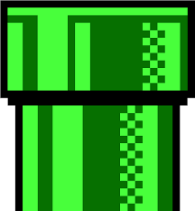
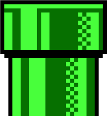
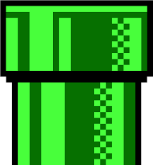

Um exemplo do que aprendemos até agora

 

Análise e Desenvolvimento de Sistemas é a área da tecnologia responsável por desenvolver, projetar e implementar softwares para atender as necessidades de empresas, utilizando diversas técnicas de programação e gestão de projetos para criar soluções inovadoras e eficientes visando a automação de todos os processos relativos às Tecnologias de Informação e Comunicação (TCI).
A função de um administrador de banco de dados é cuidar do banco como um todos, desde sua iniciação até a análise de sua estrutura. O objetivo é gerar valor para os negócios a partir das informações coletadas, que eventualmente podem se cruzar conforme as estratégias traçadas.
Como o nome já sugere, o papel do desenvolvedor de software é criar um sistema capaz de executar ações em dispositivos eletrônicos. Mas ele não se limita apenas aplicações para computadores. Essa profissão pode desenvolver vários tipos de aplicação web, desde um sistema operacional, até um aplicativo ou site.
O back-end também é uma forma de desenvolvimento. Nessa carreira, o profissional está por trás de tudo o que estrutura as ações do usuário durante sua navegação. O principal papel do desenvolvedor back-end é o de garantir o funcionamento simultâneo de banco de dados, front-end e servidor.
A carreira de front-end é um complemento da de back-end. Em sua atividade, o profissional deve usar o código das interfaces gráficas geradas pelo back para elaborar a parte visual de sites e aplicações. Em resumo, esse desenvolvedor deve estar focado na experiência do usuário. Para que ela seja positiva, deve garantir um desenho e desenvolvimento adequado das páginas e funções. Engenharia de Software o engenheiro de software é o profissional responsável por desenvolver, implementar e fazer a manutenção de softwares para máquinas e sistemas. Entre os programas que podem ser desenvolvidos por ele estão aplicativos, sistemas personalizados para áreas como financeira e da saúde, além de jogos.
O engenheiro de software é o profissional responsável por desenvolver, implementar e fazer a manutenção de softwares para máquinas e sistemas. Entre os programas que podem ser desenvolvidos por ele estão aplicativos, sistemas personalizados para áreas como financeira e da saúde, além de jogos
A média salarial de um analista de sistemas é de R$ 5.116, iniciando em R$ 3.312 e podendo chegar a R$ 7.301. O valor, no entanto, pode variar conforme a empresa contratante e a área que o analista seguir. Segundo o Guia Salarial 2023 da Robert Half, por exemplo, um desenvolvedor front-end sênior pode ganhar até R$ 21.900.
O szymanski disponibiliza o técnico de desenvolvimento de sistemas simultâneo ao ensino médio e tem duração de três anos.
O curso proporciona o básico da área e certificação ao final,
disponibilizando a possibilidade de atuar como técnico em desenvolvimento de sistemas, logo após a formação.
Além de que quem se forma nessa área tem um grandes benefícios como: Mercado promissor, o mercado para analistas e
desenvolvedores de sistemas, faltam profissionais qualificados para atender a demanda das empresas.
Curso rápido: o curso tem duração de apenas três anos, ou seja, logo você é apto a entrar no mercado de trabalho.
Quem faz o técnico de desenvolvimento de sistemas no colégio tem grande vantagens como certificações, oportunidade de fazer estágios durante a realização do curso.
Além de ser preparatório para o mercado de trabalho sem que tenha que fazer uma graduação.
O szymanski conta com um laboratório de informática estruturado com mais de vinte computadores e notebooks. Também equipado com um projetor na sala. Além de conter um educatrom (uma TV conjunta a um computador) em cada sala do colégio e acesso a Internet gratuito por toda a instalação.
Um exemplo do que aprendemos até agora
